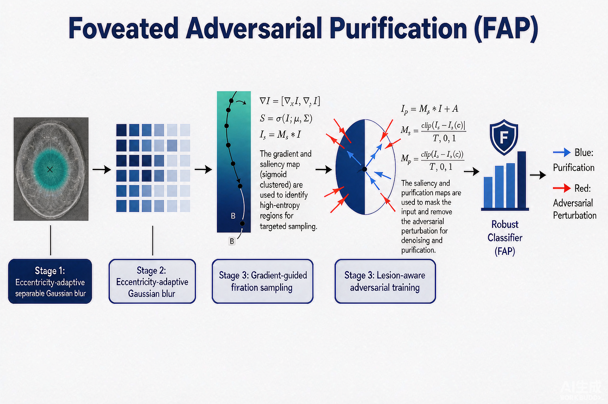

Problem
解决的问题
医学影像深度学习模型诊断准确率很高，但对对抗扰动极为敏感；既有防御大多面向自然图像，直接迁移会在抑制噪声的同时破坏病灶高频细节，或带来难以承受的算力与显存开销。
Defense on DNNs · 2025 · ICDM
FAP: A Foveation-Inspired Adversarial Purification Pipeline for Enhancing Robustness in Mammography Classification
Problem
医学影像深度学习模型诊断准确率很高，但对对抗扰动极为敏感；既有防御大多面向自然图像，直接迁移会在抑制噪声的同时破坏病灶高频细节，或带来难以承受的算力与显存开销。
Value
在三个乳腺钼靶数据集上大幅提升鲁棒性：CMMD（粗大肿瘤）+20.03%、BREAST（混合病灶）+16.39%，CBIS-DDSM（微钙化）维持基线性能；可分离模糊使 GPU 显存占用降低 40%，并给出 ℓ2 认证半径 1.12，超过已有防御方法。
Paper-grounded Academic Summary
主要创新性：把生物视觉的中央凹视锐度梯度引入对抗净化，配合可分离实现，在保留病灶细节与抑制外周噪声之间取得平衡并降低 40% 显存。
学术影响力：在三个乳腺钼靶数据集上大幅提升鲁棒性：CMMD（粗大肿瘤）+20.03%、BREAST（混合病灶）+16.39%，CBIS-DDSM（微钙化）维持基线性能；可分离模糊使 GPU 显存占用降低 40%，并给出 ℓ2 认证半径 1.12，超过已有防御方法。该工作为医学影像场景下可解释、低开销的对抗防御提供了可迁移的方法和研究依据。

Technical Route
Innovation